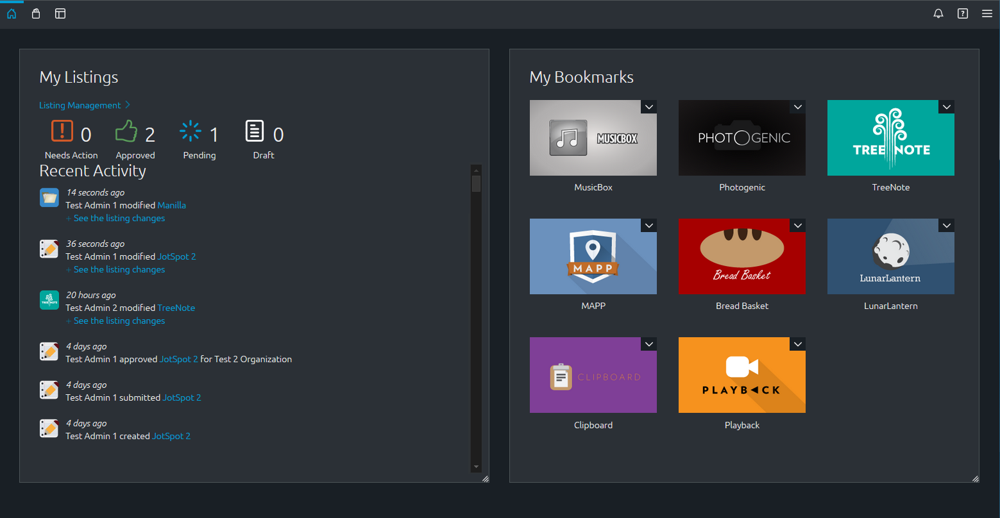
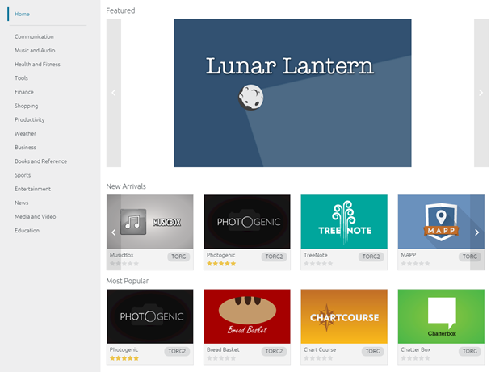
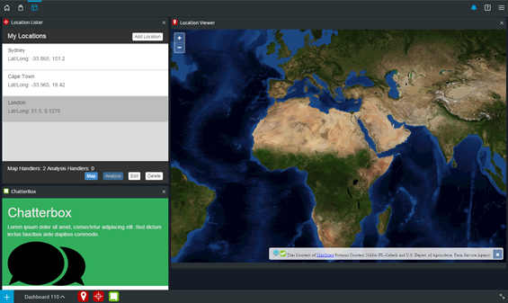

OZONE is an ecosystem of software that enables users from numerous organizations to share data and manipulate it solely within browser memory. It comprises three specific products that interact using inter-widget communication (IWC). Each product performs a specific task:
An organizational display that houses applications users find in Center and want to store in their local environment. Think of it like a repository of bookmarks in your Internet browser.
A store, similar to a commercial application store like Apple's App Store or Google Play. Use it to search for and bookmark applications to use in your instance of OZONE
The framework where applications run and interact with each other. Webtop creates an environment where OZONE compatible applications can share a virtual network and core services that solely exist within the browser's memory.
The technology widgets use to communicate with each other within a brower without sending data back to their respective servers.